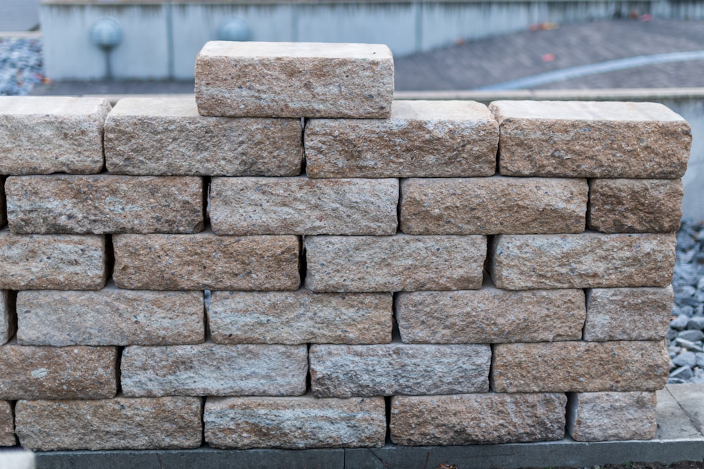

The source directory covers 2 provider types, retaining wall contractors and installation, with listed locations in California, Colorado, Georgia, Missouri, Nebraska, Oregon and Washington. It says requests are free to submit, with no obligation to proceed, and asks homeowners to share wall size, site conditions, ZIP code and timing. Its largest listed state count is Missouri with 45 listings, followed by Nebraska with 23, California with 22 and Oregon with 16.
For homeowners comparing retaining wall installation options, the useful starting point is a clear project brief that separates wall size, site conditions, timing and contractor fit.
Retaining Wall Installation Explained
Retaining Wall Contractors Near Me presents itself as a United States directory for retaining wall contractors and installation providers. The practical value is not a promise that one contractor is right for every site. It is a structured way to browse cross-checked listings, read reviews, compare services and pricing, view photos where available and request quotes from providers that may suit the job.
The strongest use case is early scoping. Before asking for a quote, gather the same details the source page asks for: the service needed, approximate wall size, site conditions, ZIP code and preferred timing. Those inputs help keep the conversation about the actual wall, not just a headline price.
- Service type: decide whether you are looking for a contractor category generally or a specific installation enquiry.
- Site description: note access, slope, existing wall issues and any constraints you can describe without guessing technical requirements.
- Comparison method: use reviews, photos, services and pricing information as prompts for questions, then confirm details directly with the provider.
Who this applies to
This guide applies to property owners who already know they need help with a retaining wall and want a cleaner way to approach contractors. It is also useful for owners comparing patio, concrete or landscape related wall work where the published listing says the provider works with retaining walls.
It is less useful for someone seeking engineering advice, building approval advice or a guaranteed construction specification from a directory page alone. The source page does not publish design rules, engineering standards, approval thresholds or fixed installation prices. Treat it as a discovery and comparison tool, then ask each contractor what they can assess, quote and document for your site.
For readers focused on Missouri, the related St. Louis contractor comparison guide gives a narrower view of the same trade category in that market.
Details to prepare before requesting quotes
A short brief helps contractors respond with fewer assumptions. Start with the plain facts you can observe: where the wall will be, whether the request is for a new wall or replacement, approximate dimensions, access constraints and the timing you have in mind. If the wall is part of a larger outdoor improvement, say that too, because sequencing can affect how a contractor discusses the job.
Do not invent technical answers to look prepared. If you are unsure about drainage, soil, engineering or approvals, write the uncertainty down as a question. A useful enquiry separates known facts from items that need professional inspection.
- What service do you need, contractor comparison or installation help?
- What is the approximate wall size?
- What site conditions might affect access or quoting?
- What ZIP code and timing should a provider use when responding?
- What photos can you share to make the first conversation clearer?
How to read listings without over-reading them
Listings can help you shortlist, but they are not the same as a completed quote. Reviews indicate customer feedback shown on the source page. Photos can show the kind of work a provider chooses to display. Service descriptions can show whether a business presents retaining walls as a core service or part of a broader concrete, patio or contracting offer.
Use each listing as a question generator. If a provider describes installation, ask what information they need before pricing. If a provider shows related concrete or patio work, ask whether that affects scheduling or scope. If a profile includes ratings or review counts, treat them as one comparison input alongside the actual quote discussion.
The source page says users can get in touch directly by call, email or a quote form. That means the final decision should still happen after direct contact, clear scope and confirmation of current availability and project requirements.
What not to assume from a directory result
A directory result should not be read as a fixed price, availability guarantee or approval pathway. The source page offers browsing, comparison and enquiry tools, but it does not state universal costs, construction methods, regulatory requirements or timeframes for retaining wall work. Those details depend on the provider and the particular property.
Good comparison is slower than chasing the first response. Ask each contractor the same baseline questions, then compare the answers. A quote conversation should make clear what is included, what remains provisional and what the owner must confirm before work begins.
- Ask whether the provider handles the specific service you need.
- Ask what site information they require before giving a firm quote.
- Ask how photos, access and timing affect their assessment.
- Ask what is excluded from the quote so comparisons are fair.
- Define the job. Write down whether you need contractor comparison, installation help or a broader wall related project discussion.
- Prepare the site facts. Collect wall size, site conditions, ZIP code, preferred timing and useful photos before requesting quotes.
- Compare consistently. Ask each provider the same questions about scope, exclusions, availability and what they need before pricing.
- Confirm directly. Use the listing as a starting point, then confirm current services and project requirements with the contractor.
| Stage | Useful for | Do not assume |
|---|---|---|
| Browsing listings | Finding provider types, locations, reviews, photos and service descriptions | That a listing alone confirms price, availability or suitability |
| Submitting an enquiry | Sharing wall size, site conditions, ZIP code and timing | That submission creates an obligation to proceed |
| Speaking with providers | Confirming scope, requirements, timing and quote detail | That every contractor assesses the same job in the same way |
Common questions
Is submitting a request free? The source page states that submitting a request is free and that there is no obligation to proceed. It also says details may be shared with suitable professionals so they can contact you about the request.
What information should I include for a wall enquiry? Include the service needed, approximate wall size, site conditions, ZIP code and timing. Those are the specific project details requested on the source page.
Can I compare providers across more than one state? Yes. The source page lists locations in California, Colorado, Georgia, Missouri, Nebraska, Oregon and Washington, with separate location browsing available from the directory.
Does a listing replace a contractor quote? No. Listings help with discovery and comparison, but the source page still directs users to contact providers directly, request a quote and confirm current project requirements.
This guide covers how to scope and compare retaining wall providers using the supplied directory information.